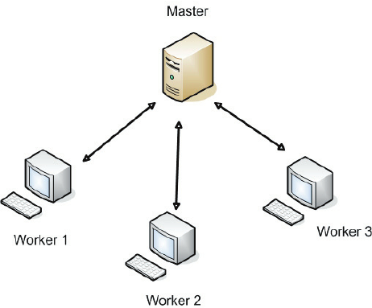
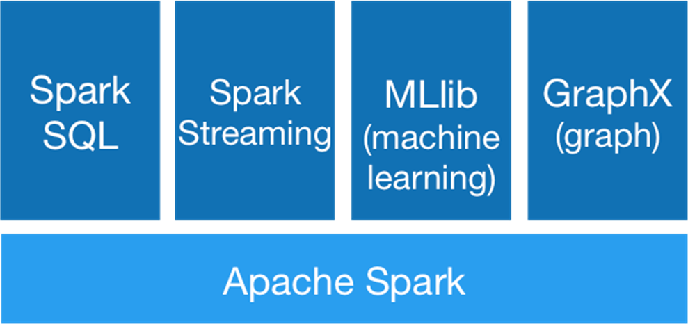

Intro to Databricks
Databricks is a web-based platform that provides cluster management and Python notebook style files. It is extremely
useful when analyzing big data as the platform is cloud based. This means that a computation that may be extremely
hindering due to your personal computer hardware can now run-in seconds! Due to its cloud nature, it uses distributed
computing on a cluster of machines. Like Hadoop, there is a driver node and workers. This is how we can complete
complex calculations in seconds as the workload is spread across a network.

Databricks also supports Lakehouse architecture. This means you can be extremely dynamic with your database as you have
the option to use a data warehouse, data lake, or the lakehouse itself. We will discuss in depth the difference between
each warehousing technique later. For now, just know that each type has their specific use case.
Databricks runs on the Apache Spark API which allows for multiple programming languages to be used in a notebook.
Some supported languages are SQL, Python, and R.
Mini Exercise: Setting up your first workbook
1. Create a Databricks Community Edition account.
2. Navigate to the left hand menu. Under the Create tap, select Cluster
3. Give your cluster an appropriate name. You can leave the rest of the settings as default. Then hit create
4. Once you cluster has been successfully created (marked by a green check), return to the create tab and select notebook.
5. Give your notebook an appropriate name, choose your default language (I recommend Python), and select the
cluster you just created. Hit create and you are all set-up.
Spark
Apache Spark is a fast, general purpose cluster computing system for large scale data processing. It uses high level
APIs in Java, Scala, Python, and R. It is suitable for both batch processing and streaming processing. The
difference between the two is that batch processing is set to complete jobs at a specified time whereas
streaming processing occurs in real time.
Spark has multiple programming languages it can process. It was natively built on Scala, but more recently
added Java, Python, and R. It also supports a SQL like language which is Spark SQL which is dynamic in
that it can process structured and semi-structured data (CSV, Parquet, JSON). Spark Streaming allows for
real time analytical processing. It is not as powerful as Apache Storm, but for smaller scale tasks it
can provide the compute power. It also supports MLlib, a machine learning library which supports different data science models. Lastly, there is GraphX which allows for in-depth graphing.

Exercise: Exploratory Analysis on New York Taxi Dataset
For this exercise create a new notebook in Databricks. You can get the dataset HERE. Parameterize
the URL to dynamically load the data into a dataframe (i.e., multiple years and quarters). Clean and
reformat the data to be in a professional level manner (remove nulls, column names, etc.,). Once you
have the data in a workable fashion, get some simple statistics about the data. What datatypes are
included in the data set? Columns? Mean, standard deviations, etc.,
Next, pick two years you want to further analyze. Create at least three SQL queries and three python
queries on the data. Be creative! The more curious you are the better your outcome will be!